Programming in Python and Deep Learning
Forecasting with Machine Learning
Natasia Villadsen
2026-11-04
Introduction
Today
Brains and history
From McCulloch and Pitts to the renaissance of neural networks
Anatomy of a network
Layers, activations, and the forecast
Training
Objective, optimization, backpropagation, initialization
Regularization
Dropout, penalties, and early stopping
Implementation
The PyTorch pipeline
Beyond feed-forward neural networks
CNNs, LSTMs, and Transformers
Why PyTorch?
PyTorch is the deep learning framework of this course
85% of deep learning research papers use PyTorch
228,000 vs. 15,000 pre-trained models on HuggingFace (PyTorch vs. TensorFlow)
55% of new production deployments as of 2025 (not limited to research)
- Tutorials
PyTorch is the framework of instruction, but you are free to use TensorFlow
Neural Networks are Inspired by Brains
A Neural Network of the Brain of a Mouse I
Extract from 1mm² of Mouse Brain

Source: MICrONS Explorer Render, Daniel Berger & MICrONS Explorer Consortium Team. Google Research and Harvard University.
A Neural Network of the Brain of a Mouse II
Extract from 1mm² of Mouse Brain — Closer Look

Source: MICrONS Explorer Render, Daniel Berger & MICrONS Explorer Consortium Team. Google Research and Harvard University.
A Neural Network of the Brain of a Mouse III
Extract from 1mm² of Mouse Brain — Even Closer Look

Source: MICrONS Explorer Render, Daniel Berger & MICrONS Explorer Consortium Team. Google Research and Harvard University.
McCulloch & Pitts (1943)
- Bedrock of contemporary deep learning
- Conceived analogue between brain and computer/artificial neural network
| Biology | Computation | |
|---|---|---|
| Biological neural network | \(\Leftrightarrow\) | Artificial neural network |
| Thinking | \(\Leftrightarrow\) | Computing |
| Neurons | \(\Leftrightarrow\) | Mathematical objects |
“…each having a soma and an axon.”
From introduction of seminal 1943 paper:
“The nervous system is a net of neurons, each having a soma and an axon. Their adjunctions, or synapses, are always between the axon of one neuron and the soma of another. At any instant a neuron has some threshold, which excitation must exceed to initiate an impulse.”
Rosenblatt (1958)
Operationalised McCulloch & Pitts’ networks
| Biology | Artificial network | |
|---|---|---|
| Synapses (connections between biological neurons) | \(\Leftrightarrow\) | Trainable weights |
| Human learning | \(\Leftrightarrow\) | Changing/updating weights and biases |
A Neuron I
A Biological Neuron
A Neuron II
Artificial Analogue to Neuron
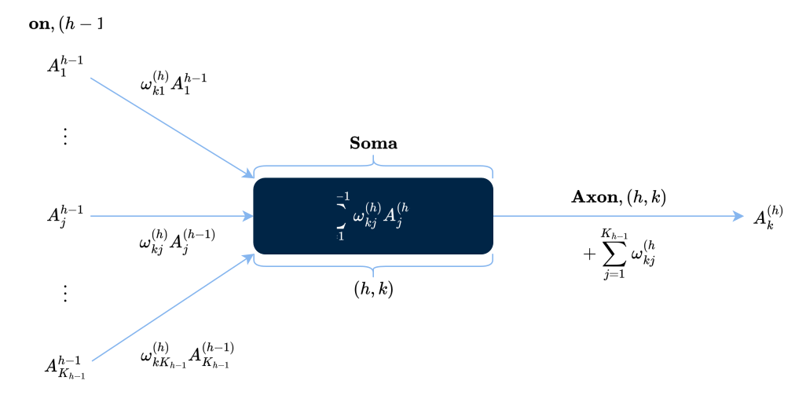
When Neural Networks Almost Died
The Crisis of Neural Networks
Scale Deep learning models are most favorable at scale
Hardware Lack of necessary computing power and suitable hardware (GPUs)
Training Overfitting, fragility, and vanishing gradients
Theory Lack of theoretical support
The Renaissance of Neural Networks
Computation
Computational power
Moore’s Law, GPUs
Algorithms
E.g., ReLU, dropout, Adam
Backpropagation
Efficient gradient computation for deep networks
Modeling
Pre-trained models
Including custom tuning
Frameworks
PyTorch, TensorFlow, and similar
Big data
Large datasets
Next challenge: Physical limits of silicon-based chips reached.
Possible solution: quantum computing
Moore’s Law
Moore’s Law
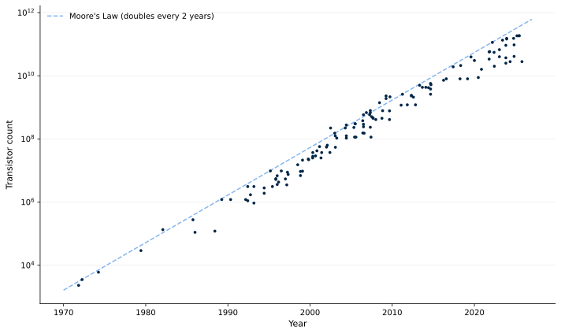
Source: M. Horowitz, F. Labonte, O. Shacham, K. Olukotun, L. Hammond, and C. Batten; Karl Rupp, & Danial Chitnis, Creative Commons Attribution 4.0 International license.
Neural Networks
A Neural Network
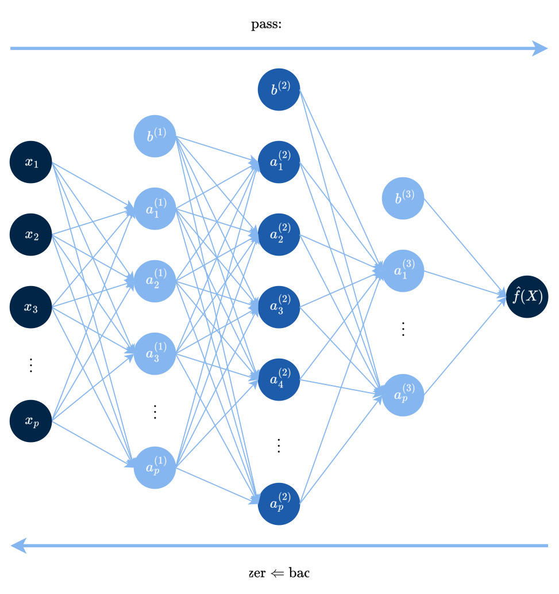
The Layers of a Neural Network
Layers are indexed by \(h\), \(h = 0, \ldots, H+1\). There are \(K_h\) neurons in each layer \(h\), with activations \(A_k^{(h)}\).
One input layer
\(h = 0\)
The neurons are the \(p\) input features, \(\mathbf{X} = (X_1, X_2, \ldots, X_p)\)
\(A_j^{(0)} = X_j\), \(\quad j = 1,\ldots,p\)
\(H\) hidden layers
\(h = 1, \ldots, H\)
Essential computations here
One output layer
\(h = H+1\)
Produces the forecast
The Hidden Layers
The essential computations occur in the hidden layers (\(h = 1,...,H\)), with activations \(A_k^{(h)}\), weights \(\omega_{kj}^{(h)}\), biases \(\omega_{k0}^{(h)}\), and activation functions \(g_h\),
\[A_k^{(h)} = g_h\left(\omega_{k0}^{(h)}+\sum_{j=1}^{K_{h-1}}\omega_{kj}^{(h)}A_j^{(h-1)}\right), \qquad k = 1,...,K_h\]
Weighted sum
Weights times the activations of the previous layer
Activation function
\(g_h\) introduces non-linearity to layer \(h\)
The First Hidden Layer
The first hidden layer is a special case, with \(K_0 = p\) and \(A_j^{(0)} = X_j\),
\[A_k^{(1)} = g_1\left(\omega_{k0}^{(1)}+\sum_{j=1}^{p}\omega_{kj}^{(1)}X_j\right), \qquad k = 1,...,K_1\]
Forecasts
In the regression task, the output layer (\(h = H+1\)) produces forecasts, with weights \(\beta_k\) and intercept \(\beta_0\), \[f(\mathbf{X}) = \beta_0 + \sum_{k = 1}^{K_H}\beta_k A_k^{(H)}\]
Evaluating in the activations of the last hidden layer,
\[f(\mathbf{X}) = \beta_0 + \sum_{k = 1}^{K_H}\beta_k\, g_H\left(\omega_{k0}^{(H)}+\sum_{j=1}^{K_{H-1}}\omega_{kj}^{(H)}A_j^{(H-1)}\right)\]
Similarity to Neurons Revisited
Artificial Analogue to Neuron
Non-Linear Activation Functions
Essential component of neural networks: Introduces non-linearity to the model, allowing it to learn complex patterns
| Function | Map | Definition |
|---|---|---|
| ReLU (Rectified Linear Unit) most dominant today |
\(f: \mathbb{R} \to [0, \infty)\) | \(f(x) = \max\{0, x\}\) |
| tanh (hyperbolic tangent) | \(\text{tanh}: \mathbb{R} \to [-1, 1]\) | \(\text{tanh}(x) = \dfrac{e^x - e^{-x}}{e^x + e^{-x}}\) |
| sigmoid | \(\sigma: \mathbb{R} \to [0, 1]\) | \(\sigma(x) = \dfrac{1}{1 + e^{-x}}\) |
Sigmoid was the first activation function
\(\sigma(x) = 0\): the neuron does not fire
\(\sigma(x) = 1\): the neuron fires \(\Rightarrow\) the neuron contributes to the output of the network
Activation Functions and Their Derivatives
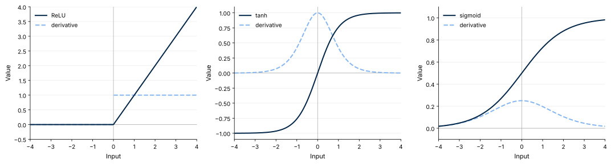
ReLU: \(g'(x) = 0\) for \(x < 0\), \(g'(x) = 1\) for \(x > 0\). tanh: \(g'(x) = 1 - \tanh^2(x)\). sigmoid: \(g'(x) = \sigma(x)(1 - \sigma(x))\).
The derivative \(g'\) enters every backpropagation step.
Note: the sigmoid derivative is maximized at \(x = 0 \to \sigma'(x) = 0.25\) - risk of vanishing gradients
Specifying the Activation Function
Specifying the activation function in the forward pass,
Alternatives: torch.tanh(self.fc1(x)), torch.sigmoid(self.fc1(x))
The Blueprint
1
Data
Target variable and predictors
2
Split and scale
Chronological training, validation and test split, standardization fitted on the training sample only
3
DataLoaders
Tensors in mini-batches
4
Model
An nn.Module defining the architecture
5
Ingredients
Objective, optimizer, initialization, regularization, early stopping, loss
6
Training loop
Training and validation over epochs
7
Evaluation
Out-of-sample accuracy measures on the test sample
Preliminaries
We consider a general blueprint for forecasting with neural networks and a specific example of forecasting US quarterly inflation with a feedforward neural network
Empirical Data
US quarterly macro data 1959Q1-2009Q3 (no missing values)
Lagged features: inflation, unemployment and the T-bill rate at time \(t\) are used to predict inflation at time \(t+1\)
Temporally Conscious Data Splitting
Chronological split (shuffle=False) to preserve temporal order (split: 70:15:15)
Train (70%)
Validation (15%)
Test (15%)
Standardization
Tensors
NumPy array
torch.Tensor
TensorDataset
DataLoader
The input data is converted to the format that PyTorch expects
Constructing DataLoaders
This is incredibly efficient for large or specialized datasets
The Simple Neural Network I
PyTorch neural networks are defined as subclasses of nn.Module
Input n_in features
fc1 + ReLU n_hidden1 neurons
fc2 + ReLU n_hidden2 neurons
fc3 1 output
- Parameters are passed after
self(heren_in,n_hidden1andn_hidden2) n_inis the number of input features,n_hidden1andn_hidden2are the numbers of neurons in the first and second hidden layer- The network on the next slide has two hidden layers
The Simple Neural Network II
Training a Neural Network I
xkcd #1838
Training a Neural Network II
- We give this example in the \(h = 1\) case,
\[f(\mathbf{X}) = \beta_0 + \sum_{k = 1}^{K_1} \beta_k A_k^{(1)} = \beta_0 + \sum_{k = 1}^{K_1}\beta_k g_1\left(w_{k0}^{(1)}+\sum_{j=1}^p\omega_{kj}^{(1)}X_j \right)\]
The parameters to be estimated are
Output layer
\(\boldsymbol{\beta} = \beta_0, \beta_1, \ldots, \beta_{K_1}\)
Hidden layer
\(\boldsymbol{\omega}^{(1)} = \omega_{kj}^{(1)}\) for \(k = 1, \ldots, K_1\) and \(j = 1, \ldots, p\)
Stack the parameters into a vector: \(\theta = (\boldsymbol{\beta}, \boldsymbol{\omega}^{(1)})\)
Objective Function
We assume a squared loss function to estimate parameters \(\theta\)
For a single-hidden-layer network (\(H=1\)), the model forecast for observation \(i\) is,
\[ f_\theta(x_i) = \beta_0 + \sum_{k = 1}^{K_1}\beta_k g\left(\omega_{k0}^{(1)}+\sum_{j=1}^p\omega_{kj}^{(1)}x_{ij} \right) \]
Vectorising the parameters into \(\theta\), we minimize the objective function \(R(\theta)\):
\[ \min_\theta \{R(\theta)\}, \quad R(\theta) = \frac12\sum_{i = 1}^n(y_i - f_\theta(x_i))^2 \]
Numerical Optimization I
Non-convex and high-dimensional problem no closed form, no analytical solution
Numerical optimization gradient descent is a common algorithm
Too heavy computationally stochastic gradient descent (SGD) is used instead
SGD uses only a small batch of data to compute the gradient and update the parameters at each iteration
Numerical Optimization II — Gradient Descent
- Given a differentiable function \(f: \mathbb{R}^p\to \mathbb{R}\) to be minimized with respect to the vector \(\mathbf{\theta}\in\mathbb{R}^p\) and step size \(s\),
Initialize with some starting value \(\mathbf{\theta}^\ast_{(0)}\)
Then, for each \(i\),
Compute the gradient at \(\mathbf{\theta}_{(i)}^\ast\), i.e.,
\[ \nabla f(\mathbf{\theta}_{(i)}^\ast) = \frac{\partial f(\mathbf{\theta})}{\partial \mathbf{\theta}}\Bigg\vert_{\mathbf{\theta} = \mathbf{\theta}_{(i)}^\ast}\]
Set \(\mathbf{\theta}_{(i+1)}^\ast = \mathbf{\theta}_{(i)}^\ast - s\nabla f(\mathbf{\theta}_{(i)}^\ast)\)
Repeat until convergence
Numerical Optimization III — Stochastic Gradient Descent
- Given \(f(\mathbf{\theta}) = \frac{1}{n}\sum_{j=1}^{n} f_j(\mathbf{\theta})\) to be minimized with respect to \(\mathbf{\theta}\in\mathbb{R}^p\) and step sizes \(s_i\),
Initialize with some starting value \(\mathbf{\theta}^\ast_{(0)}\)
Then, for each \(i\),
Draw an index \(j_i\) uniformly at random from \(\{1,\dots,n\}\) and compute the gradient of that single term at \(\mathbf{\theta}_{(i)}^\ast\), i.e.,
\[ \nabla f_{j_i}(\mathbf{\theta}_{(i)}^\ast) = \frac{\partial f_{j_i}(\mathbf{\theta})}{\partial \mathbf{\theta}}\Bigg\vert_{\mathbf{\theta} = \mathbf{\theta}_{(i)}^\ast}\]
Set \(\mathbf{\theta}_{(i+1)}^\ast = \mathbf{\theta}_{(i)}^\ast - s_i\nabla f_{j_i}(\mathbf{\theta}_{(i)}^\ast)\)
Repeat until convergence
Numerical Optimization IV
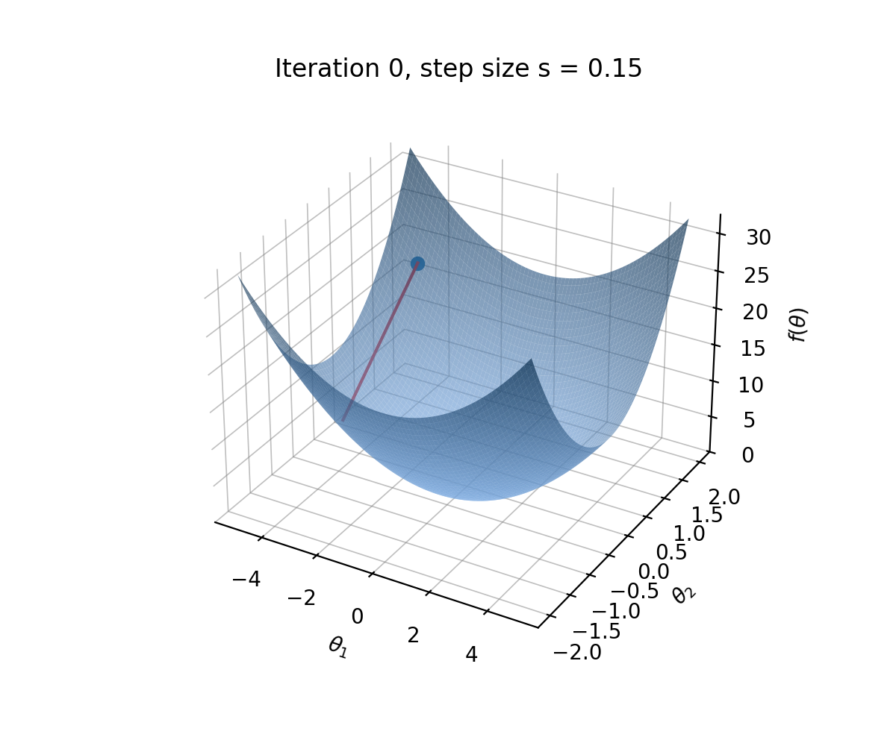
Backpropagation I
The problem
- The numerical optimization, even in the SGD case, has incredibly high computational overhead
- Weights require the chain rule to compute derivatives
The solution - Backpropagation is a recursive application of the chain rule to compute the gradient of the loss - Therefore, backpropagation eases the burden of computational costs
Backpropagation II
Recall the objective,
\[ R(\theta) = \sum_{i = 1}^n R_i(\theta) = \frac12\sum_{i = 1}^n(y_i - f_\theta(x_i))^2\]
A sum, which means the gradient is a sum over the \(n\) observations, so we need only consider one of these,
\[R_i(\theta) = \frac12\left(y_i - \beta_0- \sum_{k = 1}^{K_1}\beta_k g_1\left(\omega_{k0}+\sum_{j = 1}^p\omega_{kj}x_{ij}\right)\right)^2\]
Backpropagation III
Define \(z_{ik} = \omega_{k0} + \sum_{j = 1}^p\omega_{kj}x_{ij}\)
The output weight \(\beta_k\) enters the forecast directly: \(f_\theta(x_i) = \beta_0 + \sum_{k = 1}^{K_1}\beta_k g(z_{ik})\)
Forward pass: compute the forecast and the loss
\(\beta_k\)
\(f_\theta(x_i)\)
\(R_i(\theta)\)
Backward pass: multiply the derivatives (chain rule)
\(\dfrac{\partial f_\theta(x_i)}{\partial \beta_k} = g(z_{ik})\)
\(\dfrac{\partial R_i(\theta)}{\partial f_\theta(x_i)} = -(y_i - f_\theta(x_i))\)
Computing the derivative w.r.t. \(\beta_k\),
\[ \begin{aligned} \frac{\partial R_i(\theta)}{\partial \beta_k} &= \frac{\partial R_i(\theta)}{\partial f_\theta(x_i)} \cdot \frac{\partial f_\theta(x_i)}{\partial \beta_k} \\ &= -(y_i - f_\theta(x_i)) \cdot g(z_{ik}) \end{aligned} \]
Backpropagation IV
Define \(z_{ik} = \omega_{k0} + \sum_{j = 1}^p\omega_{kj}x_{ij}\)
Forward pass: compute the forecast and the loss
\(x_{ij}\)
\(z_{ik}\)
\(g(z_{ik})\)
\(f_\theta(x_i)\)
\(R_i(\theta)\)
Backward pass: multiply the derivatives (chain rule)
\(\dfrac{\partial z_{ik}}{\partial \omega_{kj}} = x_{ij}\)
\(\dfrac{\partial g_1(z_{ik})}{\partial z_{ik}} = g'(z_{ik})\)
\(\dfrac{\partial f_\theta(x_i)}{\partial g(z_{ik})} = \beta_k\)
\(\dfrac{\partial R_i(\theta)}{\partial f_\theta(x_i)} = -(y_i - f_\theta(x_i))\)
Computing the derivative w.r.t. \(\omega_{kj}\),
\[ \begin{aligned} \frac{\partial R_i(\theta)}{\partial \omega_{kj}} &= \frac{\partial R_i(\theta)}{\partial f_\theta(x_i)} \cdot \frac{\partial f_\theta(x_i)}{\partial g(z_{ik})} \cdot \frac{\partial g_1(z_{ik})}{\partial z_{ik}} \cdot \frac{\partial z_{ik}}{\partial \omega_{kj}} \\ &= -(y_i - f_\theta(x_i)) \cdot \beta_k \cdot g'(z_{ik}) \cdot x_{ij} \end{aligned} \]
Backpropagation V: Update Rules
The two derivatives form the basis for the update rules, with step size \(s\) and one observation \(i\) per step
Output weight
\[ \begin{aligned} \beta_k^{(t + 1)} &= \beta_k^{(t)} - s\,\frac{\partial R_i}{\partial \beta_k} \\ &= \beta_k^{(t)} + s\,(y_i - f_\theta(x_i))\,g(z_{ik}) \end{aligned} \]
Hidden weight
\[ \begin{aligned} \omega_{kj}^{(t + 1)} &= \omega_{kj}^{(t)} - s\,\frac{\partial R_i}{\partial \omega_{kj}} \\ &= \omega_{kj}^{(t)} + s\,(y_i - f_\theta(x_i))\,\beta_k\,g'(z_{ik})\,x_{ij} \end{aligned} \]
- Both updates contain the forecast error \((y_i - f_\theta(x_i))\)
- This error term is attributed to the parameters via the terms \(g(z_{ik})\) and \(\beta_k g'(z_{ik}) x_{ij}\)
Optimization Algorithms
Stochastic Gradient Descent is rarely used in practice today
Building block
RMSProp
Uses smaller steps for parameters with large recent gradients
Building block
Momentum
Averages past gradients to smooth noise and speed up
Commonly preferred
ADAM
A combination of RMSProp and momentum (Kingma & Ba, 2014)
Specifying the Optimizer
Common alternatives: torch.optim.SGD, torch.optim.RMSprop, torch.optim.AdamW
Initialization of Parameters I
- The network parameters are initialized at random —
nn.Linearuniformly - If identical weights, the neurons within a layer would have identical values (thus gradients)
- Random initialization \(\Rightarrow\) differing forecasts — we might want to ensemble
Common choices of initialization, torch.nn.init:
Xavier (Glorot & Bengio, 2010)
- For
torch.tanhandtorch.sigmoidactivations .xavier_uniform_,.xavier_normal_- \(\operatorname{Var}(\omega_{kj}^{(h)}) = 2/(K_{h-1}+K_h)\)
He (He et al., 2015)
- For
F.relu .kaiming_uniform_,.kaiming_normal_- \(\operatorname{Var}(\omega_{kj}^{(h)}) = 2/K_{h-1}\)
Initialization of Parameters II
Specifying He initialization for all linear layers,
Guards Against Overfitting
Dropout
Randomly sets neurons to zero in each training step
\(\mathcal{L}_1\) regularization
Penalizes the absolute value of the weights, favouring sparse networks
\(\mathcal{L}_2\) regularization (weight decay)
Shrinks the weights towards zero
Early stopping
Stops training when the validation loss no longer improves
Dropout
- Dropout (Srivastava et al., 2014):
nn.Dropout(p)is applied in every training step - Each neuron in the layer is set to zero with probability \(p\), e.g., \(p = 0.5\)
- Neurons are made more independent, so the network behaves like an average of many thinned networks (think bagged trees)
- Dropout is not applied in evaluation
Neural Network with Dropout = 0.5
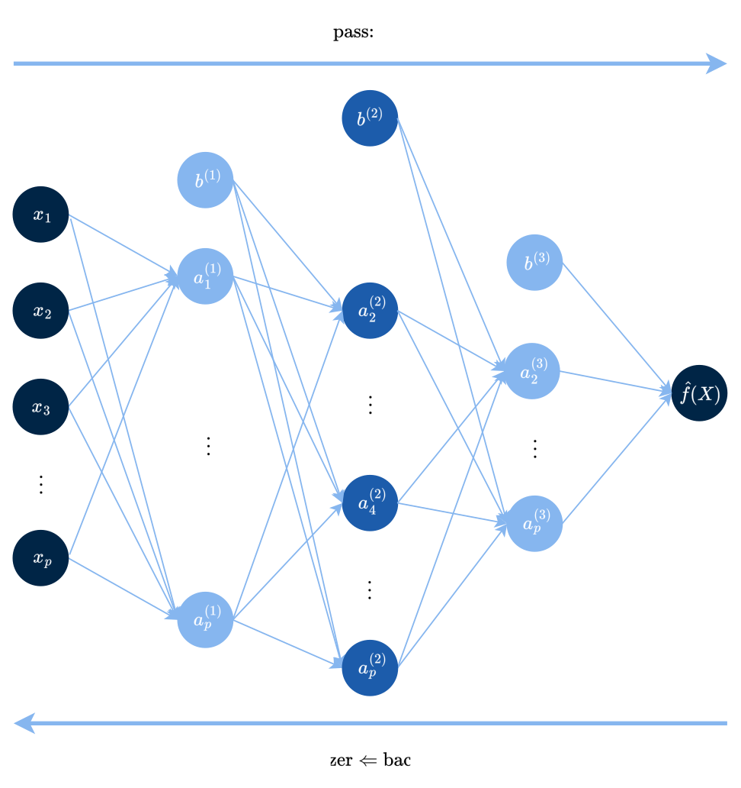
Dropout in PyTorch
Applying dropout to layer fc1 with specified probability p=0.5
\(\mathcal{L}_1\) and \(\mathcal{L}_2\) Regularization
\(\mathcal{L}_1\): absolute value
Penalizes the absolute value of the weights, favouring sparse networks, with penalty added to the loss,
\[\mathcal{L}(\omega) + \lambda\sum_{h,k,j}\left|\omega_{kj}^{(h)}\right|\]
\(\mathcal{L}_2\): weight decay
Weight decay (\(\mathcal{L}_2\)) adds a penalty to the loss, shrinking the weights towards zero,
\[\mathcal{L}(\omega) + \frac{\lambda}{2}\sum_{h,k,j}\left(\omega_{kj}^{(h)}\right)^2\]
\(\mathcal{L}_1\) Regularization in PyTorch
\(\mathcal{L}_2\) Regularization in PyTorch
Weight decay is passed as an argument to the optimizer, e.g., weight_decay = 0.01 in Adam,
Epochs
An epoch is a complete pass through the entire training dataset
The training process is iterative and involves multiple epochs. The number of epochs can be, 1. prespecified, 2. tuned, or 3. determined by early stopping
Early Stopping I
Early Stopping
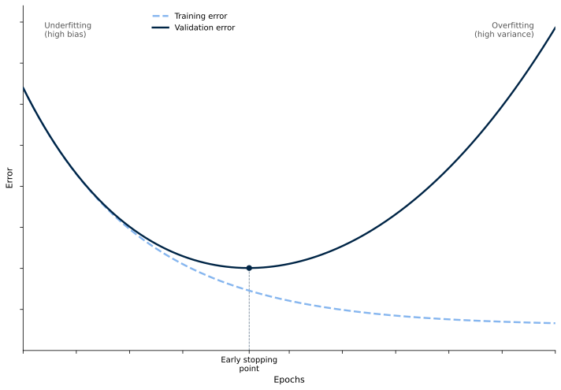
Early Stopping II
We will discuss the bias-variance trade-off in more detail next week
When the training accuracy keeps increasing, we continue training
The validation accuracy, our ability to generalize, starts to decrease after a certain point
No improvement for #patience epochs: stop and restore the best model state
To implement early stopping, the training loop (see later slides) must be slightly modified
Loss Functions
We still consider only the regression task. Typical loss functions include,
nn.MSELoss
Squared error
nn.L1Loss
Absolute error
nn.HuberLoss
Squared for small errors, absolute for large (Huber, 1964). We will see this next week!
Example for the mean squared error,
We can write our own loss functions, but this is up to you if you wish to do so.
Initializing Training
- The model is initialized and moved to the appropriate device (CPU or GPU)
- The loss function and optimizer are specified
- The number of epochs is set to 20
One Training Step
1. optimizer.zero_grad()
Reset the gradients
2. model(inputs)
Forward pass: compute the forecasts
3. criterion(outputs, targets)
Compute the loss
4. loss.backward()
Backpropagation: compute the gradients
5. optimizer.step()
Update the parameters
Main Training and Validation Loop II
Model Evaluation
An Extended Pipeline (My Preferred Approach)
Reproducible
I set the seed for reproducibility
Tracked
I store the training and validation losses, time the run, and keep running loss book-keeping for each epoch to keep track of the training process
Monitored
I print these losses at the end of each epoch to monitor convergence
Limitations of Neural Networks
Jagged Intelligence
Models have incredible power, yet struggle with tasks like telling time (Stanford 2026 AI Index Report)
Black Box
Models are not interpretable with potentially harmful consequences
Data Hungry
Models require large amounts of data to train effectively, which may not be available in all domains
Computational overhead
Frequently requires GPUs, high memory, and long compute times
Broader Perspectives of Neural Networks
Broader Applications of Deep Learning
Computer vision
Convolutional Neural Networks
Time series modelling
Recurrent Neural Networks, LSTMs, Transformers
Natural language processing
Transformers (!) \(\to\) Large Language Models
Example: Computer vision for health care
No maths, only intuition
Convolutional Neural Networks (CNNs)
- Developed for computer vision tasks (LeCun et al., 1998)
- Dominant in the field of deep learning for image recognition and classification
- Pipeline consists of convolutional and pooling operations
Image
Convolution
Activation
Pooling
Prediction
A Convolutional Neural Network Visualized
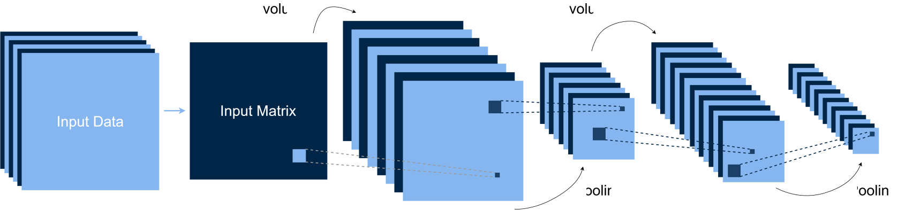
The Convolutional Operation
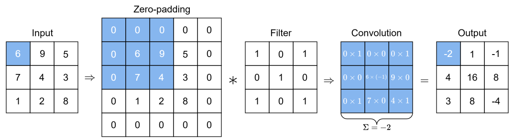
Applying Activations and Pooling
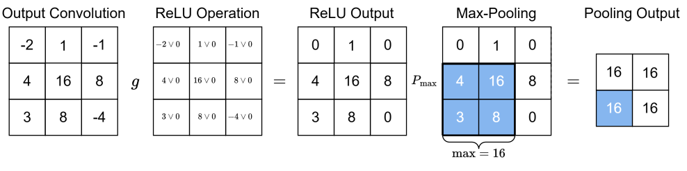
Recurrent Networks and LSTMs
Recurrent neural networks (RNNs)
- Designed for sequential data, where the output at time \(t\) depends on previous inputs and outputs
- Sequential data common in time series and natural language processing
Long short-term memory networks (LSTMs)
- A type of RNN that can learn long-term dependencies
- Before 2017 (the transformer revolution, in a few slides), Google Translate used LSTMs
Recurrent Neural Networks Visualized
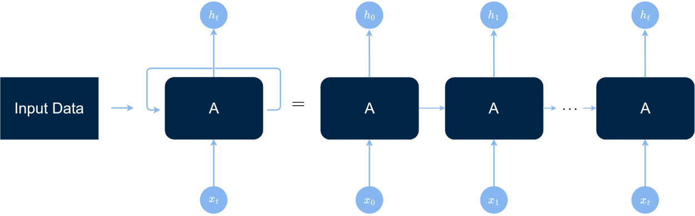
LSTM Unit Visualized
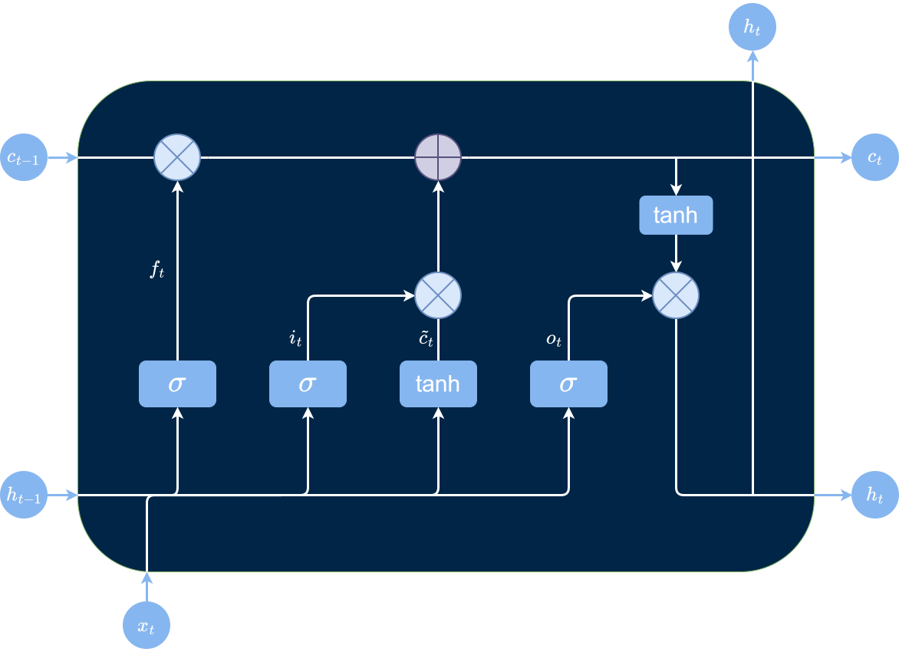
The Transformer Revolution
Transformers (Vaswani et al., 2017) are the foundation of Large Language Models (LLMs)
Self-attention
Transformers use self-attention mechanisms to process sequential data in parallel, allowing for better scalability and performance
Attention
A mechanism that allows the model to focus on relevant parts of the input sequence when making predictions
Tip
The best intuitive introduction by far, in my opinion, is Section “The Transformer Architecture”, Chapter 15 of Deep Learning with Python (Challot, 3rd edition, 2025).
Skip the code (which is geared towards TensorFlow) and focus on the intuition
LLMs are Forecasting Models
When we chat with generative AI, we are sampling from the probability distribution of the next word given the previous words
Prompt: “The central bank decided to raise the …”
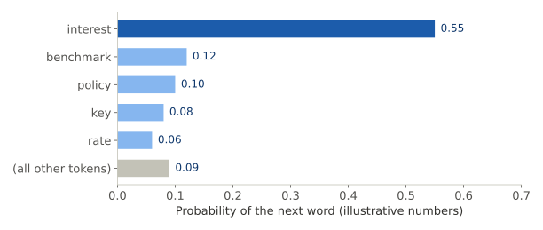
The replies we receive are nothing but (incredibly good) predictions
LLMs and Generative AI
Transformers provide the bedrock of LLMs — GPT as in ChatGPT abbreviates “Generative Pre-trained Transformer”
G Generative (AI)
P Pre-trained Trained on large corpora of text data to learn the statistical properties of language
T Transformers
A friendly piece of advice
We must keep in mind that the model is trained to retain our attention and engagement (like social media) \(\Rightarrow\) will tend to tell us what we want to hear
Can mitigate this somewhat with being neutral in our prompts:
Leading prompt
- “I am right about this, right?”
Neutral prompt
- “Will you check the correctness of this statement?”
- I often pose simpler questions with “Yes or no?”
- Restarting a conversation or changing model (Gemini/Claude/ChatGPT) can also be helpful
Recent Deep Learning Break-Throughs
Hardware
Training the Chinese LLM LongCat-2.0 Model without NVIDIA GPUs
Computer vision meets music
MuSViT reads sheet music like computer vision models read images
Mathematics
OpenAI and Anthropic (and others) are making progress in the field of mathematics
Forecasting with Machine Learning